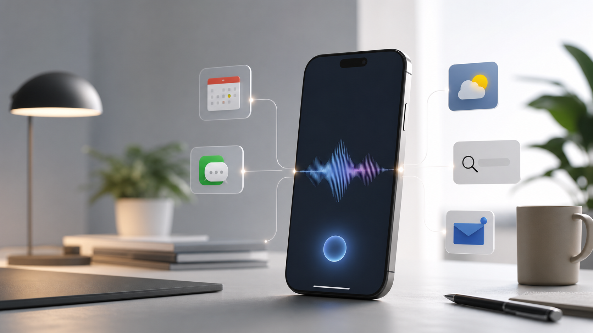

Apple Siri AI / WWDC 2026: 애플은 왜 다시 Siri를 전면에 세우나
오늘 Claude 이슈가 가장 큰 뉴스라면, 두 번째로 볼 만한 흐름은 Apple Siri AI입니다. 여러 매체는 WWDC 2026 전후로 Apple이 Siri와 Apple Intelligence를 다시 밀고 있으며, 일부 기능에서 Google Gemini와 연결될 수 있다는 흐름을 보도했습니다. 이 글은 공식 발표와 보도를 구분하면서, Apple Siri AI가 왜 다시 중요한 뉴스가 됐는지 객관적으로 정리합니다.

Source-Based Summary
읽는 기준
이 글은 단일 기사 요약이 아니라 The Verge, Axios, Times of India, MarketWatch 등 여러 매체의 보도를 기준으로 정리했습니다. 확정된 공식 발표와 보도 기반 전망은 문장 안에서 구분했습니다.
왜 Apple Siri AI가 오늘의 상위 뉴스 후보인가
Apple의 AI 뉴스는 OpenAI나 Anthropic의 모델 발표와 성격이 다릅니다. OpenAI나 Anthropic은 모델 자체가 뉴스가 됩니다. 반면 Apple은 모델을 직접 과시하기보다 iPhone, iPad, Mac, Siri 같은 거대한 사용자 접점을 통해 AI를 배포합니다. 그래서 Apple AI 뉴스는 기술 성능만으로 판단하면 약해 보일 수 있지만, 실제 사용자 영향력으로 보면 매우 큽니다. 수억 명의 iPhone 사용자가 업데이트 한 번으로 새 AI 기능을 접하게 되기 때문입니다.
The Verge는 Apple의 AI 약속이 아직 완전히 도착한 것은 아니지만, Siri와 Apple Intelligence가 다시 전면에 등장하고 있다는 점을 짚었습니다. Axios도 Apple이 Siri를 AI 에이전트 시대에 맞게 다시 세우려 한다는 흐름을 보도했습니다. Times of India와 MarketWatch는 Apple이 Google Gemini와 연결될 수 있다는 관측과 함께, Apple이 자체 AI만으로 모든 것을 해결하기보다 외부 모델을 활용할 가능성을 다뤘습니다. 즉 오늘의 핵심은 “Apple이 새 모델을 만들었다”가 아니라 “Apple이 AI 배포 전략을 다시 조정하고 있다”입니다.
핵심 쟁점 1: Siri는 단순 음성비서에서 AI 에이전트로 갈 수 있는가
Siri는 오랫동안 Apple 생태계 안에 있었지만, ChatGPT 이후의 AI 기준으로 보면 오래된 음성 명령 도구처럼 보였습니다. 사용자는 “날씨 알려줘”, “알람 맞춰줘” 같은 단순 작업은 Siri에 맡길 수 있었지만, 복잡한 맥락 이해나 앱을 넘나드는 작업에서는 기대치가 낮았습니다. WWDC 2026 전후 보도가 중요한 이유는 Apple이 이 오래된 Siri 이미지를 다시 바꾸려 한다는 점입니다.
AI 에이전트로서의 Siri가 의미 있으려면 세 가지가 필요합니다. 첫째, 사용자의 맥락을 이해해야 합니다. 예를 들어 메일, 캘린더, 메시지, 사진, 파일의 내용을 함께 보고 사용자의 요청을 처리해야 합니다. 둘째, 앱 사이를 이동하면서 실제 행동을 수행해야 합니다. 단순히 답변하는 것이 아니라 예약, 정리, 검색, 요약, 전송 같은 작업을 끝내야 합니다. 셋째, 개인정보 보호와 권한 통제가 분명해야 합니다. Apple이 AI를 말할 때 계속 개인정보 보호를 강조하는 이유도 이 지점과 연결됩니다.
| 기준 | 왜 중요한가 |
|---|---|
| 사용자 접점 | iPhone, iPad, Mac에 들어가면 모델 성능보다 실제 사용 빈도가 커집니다. |
| 에이전트 능력 | Siri가 답변을 넘어 앱 안의 행동까지 수행할 수 있는지가 핵심입니다. |
| 외부 모델 연결 | Google Gemini 같은 외부 모델 활용 여부는 Apple의 AI 전략 변화를 보여줍니다. |
| 개인정보 보호 | Apple이 AI를 대중화하려면 온디바이스 처리와 권한 통제가 설득력을 가져야 합니다. |
핵심 쟁점 2: Google Gemini 연결 보도는 무엇을 의미하나
여러 보도에서 가장 눈에 띄는 부분은 Apple이 일부 AI 기능에서 Google Gemini를 활용할 수 있다는 관측입니다. 이것은 Apple이 자체 모델 경쟁에서 밀렸다는 단순한 의미만은 아닙니다. 오히려 Apple이 AI 기능을 제품 안에 빠르게 넣기 위해 “자체 모델 + 외부 모델” 혼합 전략을 택할 수 있다는 의미로 읽을 수 있습니다.
Apple은 원래 하드웨어, 운영체제, 앱 생태계를 강하게 통제하는 회사입니다. 그런데 생성형 AI는 거대한 모델 훈련 비용과 빠른 업데이트 주기가 필요합니다. OpenAI, Anthropic, Google처럼 모델 자체를 중심으로 움직이는 회사와 Apple의 속도는 다릅니다. 그래서 Apple이 자체 Apple Intelligence를 유지하면서도, 특정 고난도 요청이나 검색·추론 기능에서 외부 모델을 붙이는 방식은 현실적인 선택일 수 있습니다. 사용자는 “Siri가 더 똑똑해졌다”고 느끼면 되고, 뒤에서 어떤 모델이 쓰이는지는 상대적으로 덜 중요할 수 있습니다.
매체별로 무엇을 다르게 봤나
The Verge는 Apple의 AI 약속과 실제 도착 사이의 간극을 중심으로 봤습니다. Apple이 AI 기능을 약속했지만, 사용자 입장에서 아직 체감이 충분하지 않았다는 문제의식입니다. Axios는 Siri가 AI 에이전트 경쟁에 다시 들어오려는 움직임을 더 넓은 산업 흐름 속에서 설명했습니다. Times of India는 Gemini 연결 가능성과 Siri 기능 개선을 대중 독자에게 쉽게 풀어냈고, MarketWatch는 Apple의 AI 전략이 투자자와 시장 기대에 어떤 영향을 주는지에 더 무게를 뒀습니다.
이런 차이는 블로그 글을 쓸 때 중요합니다. 한 매체만 보면 Apple이 AI에서 뒤처진 것처럼 보일 수도 있고, 다른 매체만 보면 Apple이 곧바로 대반격을 시작한 것처럼 보일 수도 있습니다. 여러 매체를 함께 보면 더 균형 잡힌 결론이 나옵니다. Apple은 아직 OpenAI나 Anthropic처럼 AI 모델 뉴스의 중심은 아니지만, AI 기능을 일반 사용자에게 배포할 수 있는 가장 강력한 플랫폼 중 하나입니다.
오늘의 점수: Claude 다음으로 볼 만한 이유
오늘 기준으로 Claude Fable 5가 1순위 뉴스라면, Apple Siri AI는 2순위 후보로 충분합니다. 이유는 세 가지입니다. 첫째, 사용자 영향력이 큽니다. Apple의 AI 기능은 특정 개발자나 연구자만 쓰는 것이 아니라 iPhone 사용자 전체의 경험을 바꿀 수 있습니다. 둘째, AI 에이전트 경쟁과 연결됩니다. Siri가 앱을 넘나드는 작업을 할 수 있게 되면 ChatGPT, Gemini, Claude와 다른 방식의 경쟁이 됩니다. 셋째, Apple이 외부 모델을 어떻게 활용하는지는 AI 시장의 협력 구조를 보여줍니다.
다만 아직 확정되지 않은 부분도 많습니다. Gemini 연결은 보도와 관측을 기준으로 봐야 하고, 실제 사용자 경험이 얼마나 개선될지는 출시 후 검증해야 합니다. 따라서 이 글의 결론은 “Apple이 AI를 완전히 따라잡았다”가 아니라 “Apple이 Siri를 AI 에이전트 시대의 인터페이스로 다시 세우려는 흐름이 보인다”입니다. 이 정도만으로도 오늘의 추가 뉴스로 다룰 가치가 충분합니다.
Comments
댓글